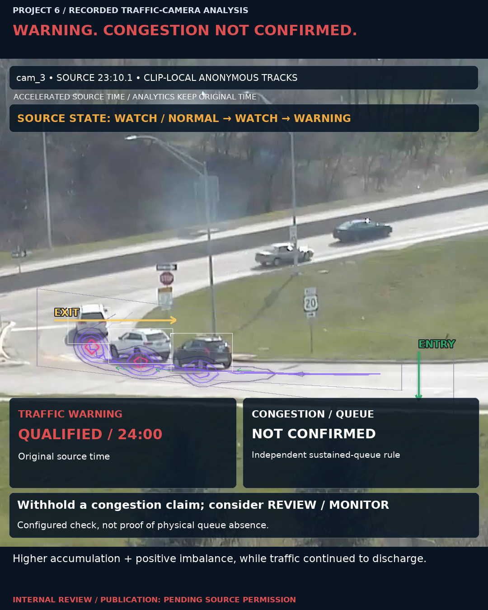
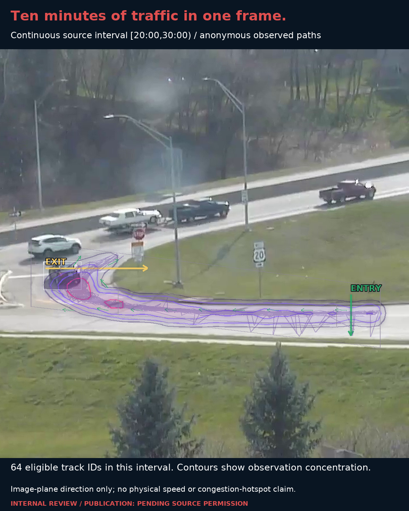

Traffic state
WARNING
State onset 24:00

Acceleration changes playback only; dwell, warning persistence and analytical timestamps remain unchanged.

3 FPS analytics
Existing boxes + clip-local IDs
Entry / exit events
1s metrics • 60s presentation window
Independent queue rule
Formal 300s metric contract preserved
Warning persistence: 297 seconds. Primary driver: density. Supporting signals: flow imbalance and density trend.
Historical diagnostic only: later interval density reached approximately 5.87× baseline while throughput and movement remained active. No demonstrated congestion lead time.
Can a fixed camera flag sustained deterioration in traffic flow without overcalling a congestion event?
Dense traffic alone does not establish a congestion event.
Prototype pipeline, analytical contracts, evidence validation and presentation design.
Python • YOLOX-Nano • ONNX Runtime CPU • anonymous multi-object tracking • FFmpeg
Clip-local vehicle tracks, entries, exits, movement and eligible dwell.
Queue-zone occupancy, low motion and persistence; separate from the warning rule.
No face/plate recognition or persistent identity.
Tracking fragmentation; no independent human-labelled accuracy claim.
Publication permission granted. Portfolio release approved.
Recorded historical analysis prototype. Not live monitoring or production deployment.